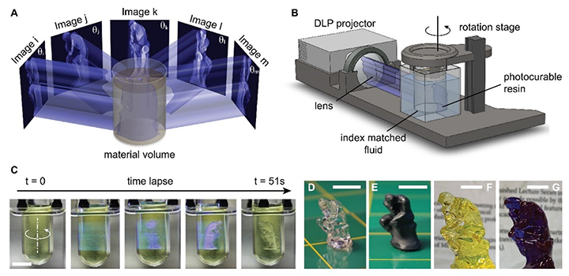

Our group led the first published demonstration (in collaboration with Lawrence Livermore Lab) of this radically new approach to additive manufacturing that creates all points of a 3D object simultaneously by tomographically synthesising a light dose in a rotating volume of photopolymer precursor solution. Because the object being manufactured does not move relative to its precursor material during exposure, CAL is freed from the rate limitations of hydrodynamic stresses that are faced by conventional, layer-based, digital light manufacturing (DLM). Instead, printing speed is governed by material conversion reactions. CAL fabricates centimeter-scale parts in tens of seconds, compared to tens of minutes or hours for DLM and other processes. Equally importantly, because materials printed by CAL do not need to contain passive light-absorbing molecules, they require ~10–100 times less optical energy to print than comparable industry-standard processes, promoting CAL’s sustainability.
The absence of hydrodynamic stresses during the printing process allows a greatly enlarged palette of materials to be explored. Precursor materials can have exceptionally high viscosities and hence higher molecular weights, which can correlate with superior mechanical performance of the final printed object (we have demonstrated >100,000 cP, 20 times typical DLM materials).

An analysis of the potential applications of CAL carried out by students through the National Science Foundation’s iCorps program identified a broad set of sectors in which CAL could be transformative. Among them, the speed and low surface roughness capabilities could be suited to production of short-run injection moulding inserts, reducing the need for maintenance of large inventories of steel moulds for spare parts. CAL’s broad materials capabilities motivate applications in lightweight cellular structures for aeronautical cabin components. CAL’s distinctive ability to print geometries around pre-existing solid components (we term this ‘over-printing’) offers the first additive analogy to over-moulding or insert-moulding and could be relevant to many consumer products. Dental applications, including directly printed aligners, are also well matched to CAL.